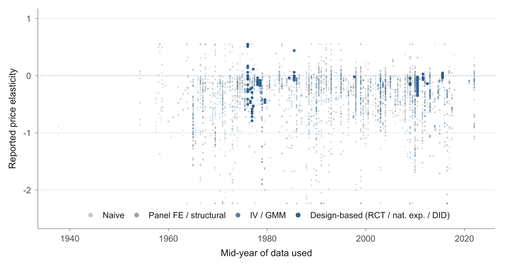

Abstract
Energy planners have long assumed that electricity demand will grow more price-responsive as metering, automation, and storage spread, an assumption now embedded in decarbonization plans. We test it against the entire empirical record: 4,898 own-price elasticity estimates from 482 studies, with data spanning 1934–2024, ranked on a single ladder of identification quality from naive regressions to randomized experiments. Three findings emerge. First, better-identified studies find smaller responses: the corrected short-run elasticity is about −0.16, and only −0.09 among the best-identified, design-based studies, whose adjusted value is statistically indistinguishable from zero. Second, responsiveness grows with time to adjust, roughly doubling from −0.16 in the short run to −0.38 in the long run as the capital stock turns over, but this pattern has itself been stable for decades. Third, responsiveness shows no upward trend across nine decades of data; if anything, the most technology-rich settings, including time-of-use pricing, are the least price-responsive in total consumption. Demand flexibility must be engineered and paid for; the historical record gives no reason to expect prices alone to deliver it.
Fig: Nine decades of estimates, and no visible drift
Each point is a reported own-price elasticity of electricity demand (winsorised at 1%), plotted against the mid-year of the underlying data and coloured by identification quality, from naive regressions (light) to design-based studies (dark blue); the 3,843 tier-classified estimates with usable standard errors are shown, with unclassified estimates omitted from the plot but retained in non-ladder analyses. Across ninety years the raw record shows no drift toward greater price responsiveness, and the best-identified, design-based studies — which arrive late and thin — point toward smaller, not larger, responses.
Reference: Irsova Zuzana, Havranek Tomas, Kudela Peter, Kudelova Anna, Sikl Vojtech (2026), “Electricity demand has not become more price-responsive despite ninety years of technological change.” Charles University, Prague. Available at meta-analysis.cz/electricity.